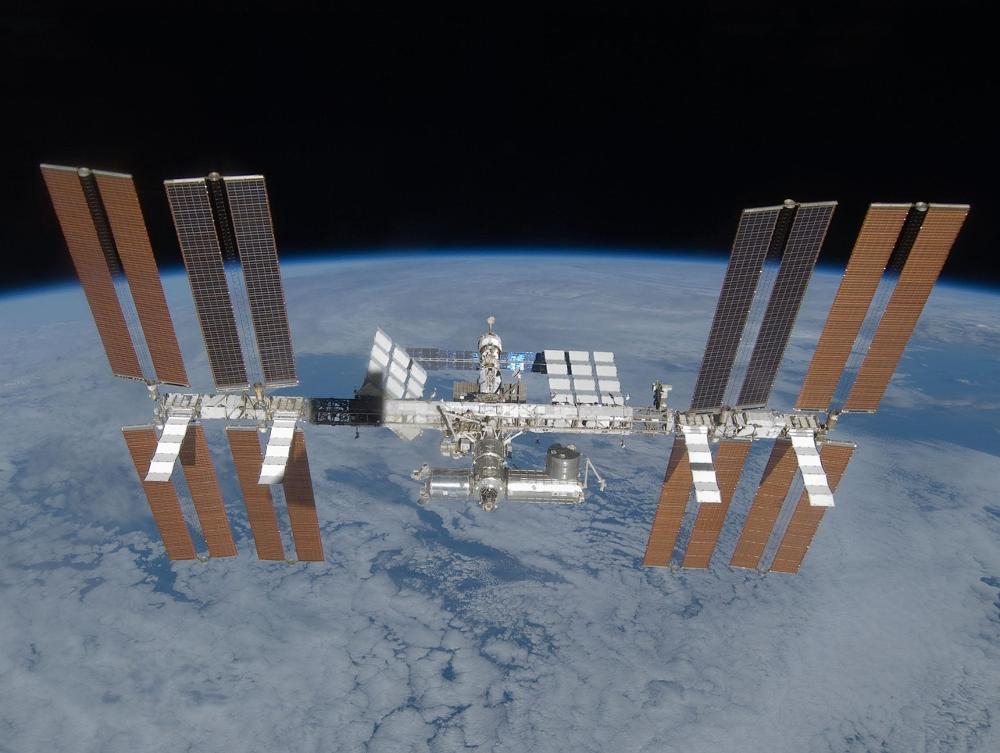
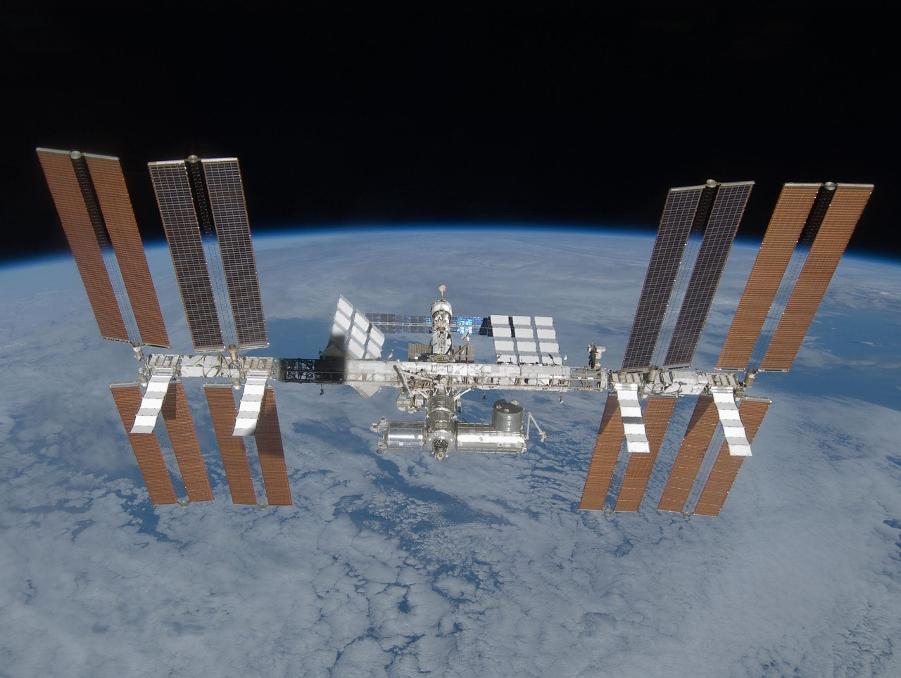

Początki ery kosmicznej
4 października 1957 roku Związek Radziecki wyniósł na orbitę pierwszego sztucznego satelitę Ziemi – Sputnik 1. To wydarzenie zapoczątkowało wyścig kosmiczny pomiędzy USA a ZSRR, który zdefiniował całe kolejne dekady badań nad przestrzenią kosmiczną.
Najważniejsze wydarzenia
- 1961 – Pierwszy lot człowieka w kosmos: Jurij Gagarin
- 1969 – Lądowanie na Księżycu: Apollo 11
- 1971 – Pierwsza stacja kosmiczna: Salut 1
- 1998 – Rozpoczęcie budowy Międzynarodowej Stacji Kosmicznej (ISS)
- 2021 – Loty komercyjne z pasażerami – era turystyki kosmicznej
Galeria
 


Zmiana kolorów strony: